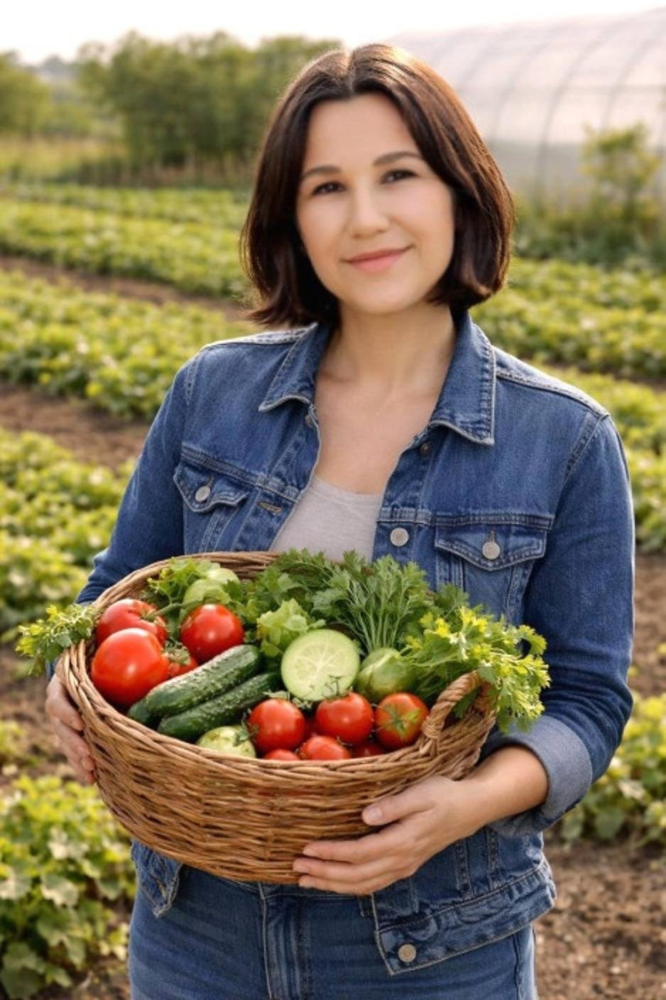
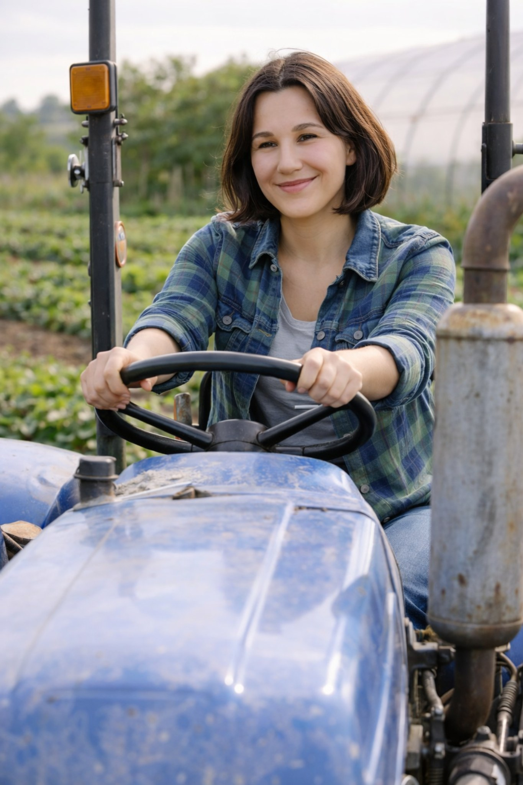
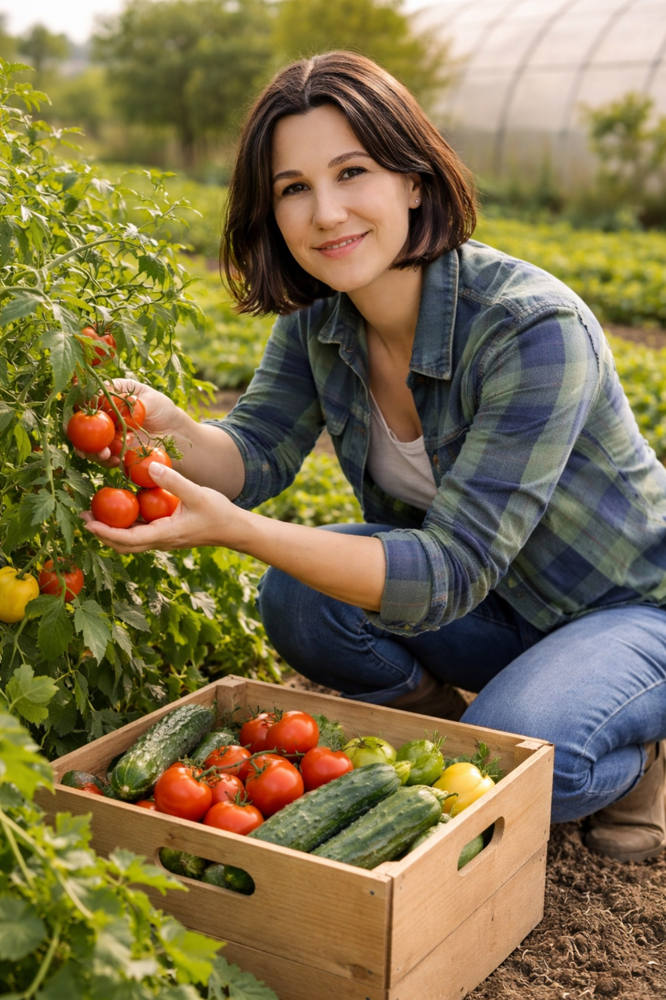
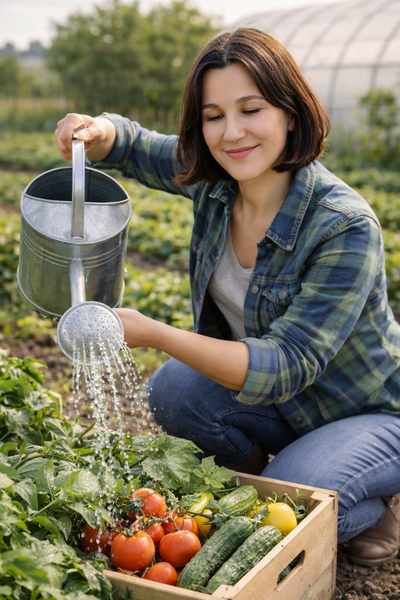
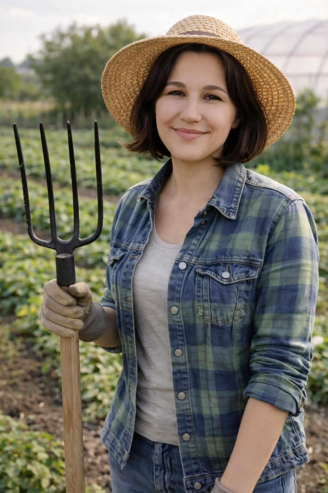
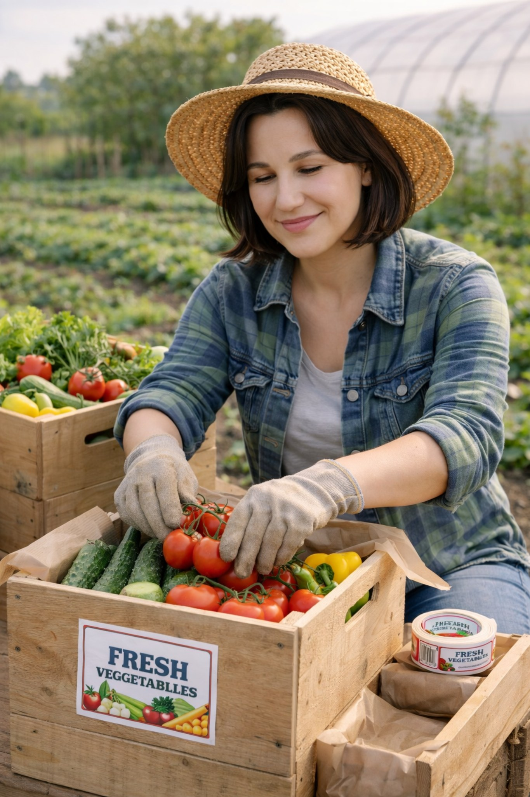

Сбор в короткий цикл
Овощи не лежат неделями на складе: собираем партиями, чтобы вкус, плотность и аромат сохранялись лучше.
свежий урожай круглый год
Свежие огурцы, томаты, зелень и сезонные наборы прямо из хозяйства. Собираем аккуратно, быстро упаковываем и передаём покупателям без долгого складского хранения.


почему выбирают нас
Овощи не лежат неделями на складе: собираем партиями, чтобы вкус, плотность и аромат сохранялись лучше.
Показываем реальные фото теплицы, полива, сбора и упаковки — так покупатель видит не обещания, а настоящий процесс.
Каждый заказ собирается бережно: овощи укладываются чисто, без лишней влаги и с учётом удобства доставки.
каталог продукции
жизнь хозяйства
Здесь собраны реальные кадры хозяйства: сбор урожая, уход за растениями, работа в теплице и упаковка заказов. Так легче понять, откуда приезжают овощи и почему они выглядят по-настоящему свежими.




как мы выращиваем
Старт сезона начинается с аккуратной подготовки грунта и контроля микроклимата, чтобы овощи были ровными и плотными.
Показываем на сайте честный процесс: полив, уход за растениями и ежедневный контроль качества без визуального шума.
Съемка на грядке усиливает ощущение свежести. Это отлично работает в hero-блоках, stories и карточках сезонных наборов.
Отдельный блок с аккуратной упаковкой повышает доверие: пользователю понятно, что он получит красивый и чистый заказ.
подбор набора
Необычный интерактивный блок: посетитель двигает ползунок и сразу видит, какая корзина подойдёт для семьи на 1–6 человек.
Идеально для кухни на несколько дней: огурцы, томаты, зелень и сезонные овощи.
отзывы покупателей
«Огурцы плотные и хрустящие, томаты ароматные. Видно, что всё собрано недавно, а не лежало где-то на складе.»
Анна, постоянный покупатель«Очень нравится, как упакованы заказы: всё чисто, аккуратно и ничего не мнётся в дороге.»
Ирина, заказ по подписке«Удобно, что можно сразу собрать корзину на сайте и оставить заявку. Перезванивают быстро, без лишней переписки.»
Марина, семейный заказfaq
Соберите корзину в каталоге или заполните форму вручную. После отправки заявки мы свяжемся с вами для подтверждения деталей.
Основные партии собираются регулярно в течение недели. Поэтому в заказ обычно попадают овощи из свежего сбора.
Да, в форме есть поле комментария. Туда можно написать удобное время, ориентиры по адресу и пожелания к заказу.
заказ онлайн
Заполните контакты, добавьте адрес и комментарий. Заказ отправится через форму, а мы свяжемся с вами для подтверждения и удобного времени доставки.